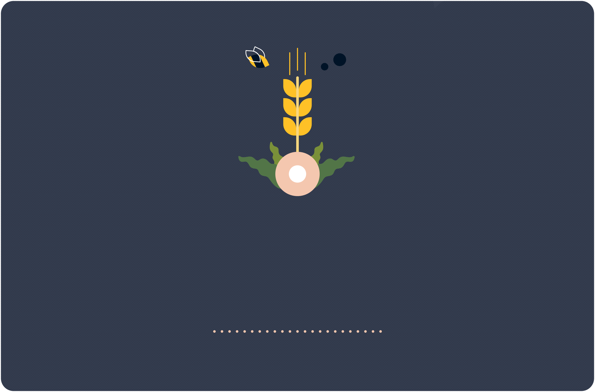

Start

Insecticides are chemicals used to kill insects that are harmful to crops, but they have lasting effects on other insects too, like bees. Bees are important pollinators, and therefore crucial to our food supply. Crops like coffee, chocolate, and apples would all be at risk without these pollinators. In addition, these chemicals are released into the air and soil, entering the food chain.